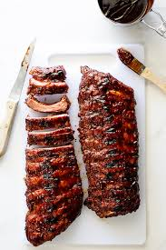

Grilled baby back ribs

Grilled Sticky & Spicy Ribs
These Sticky and spicy ribs are not the typical
fall off the bone type ribs, you will get messy
enjoying these. Napkins not included.
Ingredients
- Beer
- Rack Baby Back Ribs
- Grill - (Charcoal preferred)
- Apple Cider Vinegar
- Your favorite hot sauce (I use Franks Redhot)
- Your favorite barbecue sauce (I use Famous Dave's Sweet and Spicy)
Steps
- Soak ribs half an hour in quarter cup each cider vinegar and hot sauce.
- Fire up grill (enough charcoal for an hour or more.
- Crack a beer enjoy waiting for coals to get hot.
- Sear rack on uncovered grill flipping ribs every 3 to 4 minutes until they have a nice sear.
- When ribs have a nice sear cover grill partially with lid.
- Flip ribs every 4 to 5 minutes for approximately 30 minutes.
- Brush on barbecue sauce - put lid on grill - let smoke 3 minutes.
- Flip rack Brush on barbecue sauce - put lid on grill - let smoke 3 minutes.
- Remove rack from grill, let stand 10 minutes
- Cut up and enjoy.